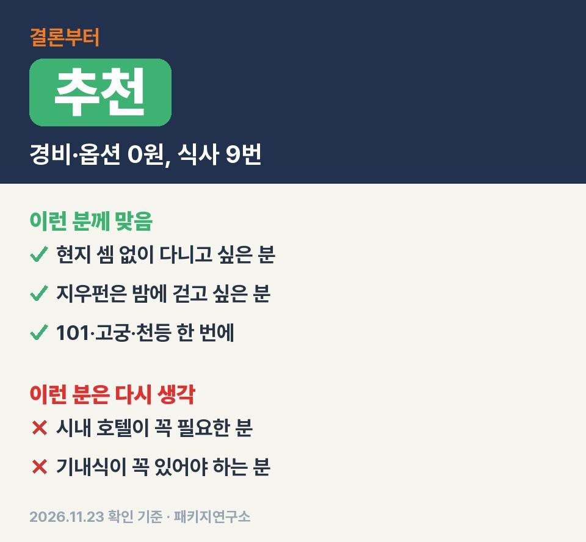
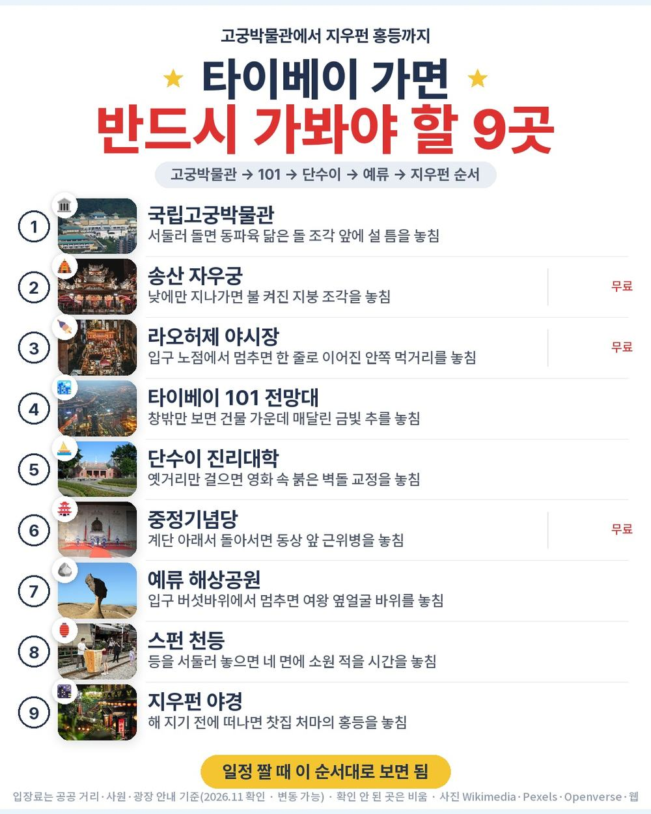
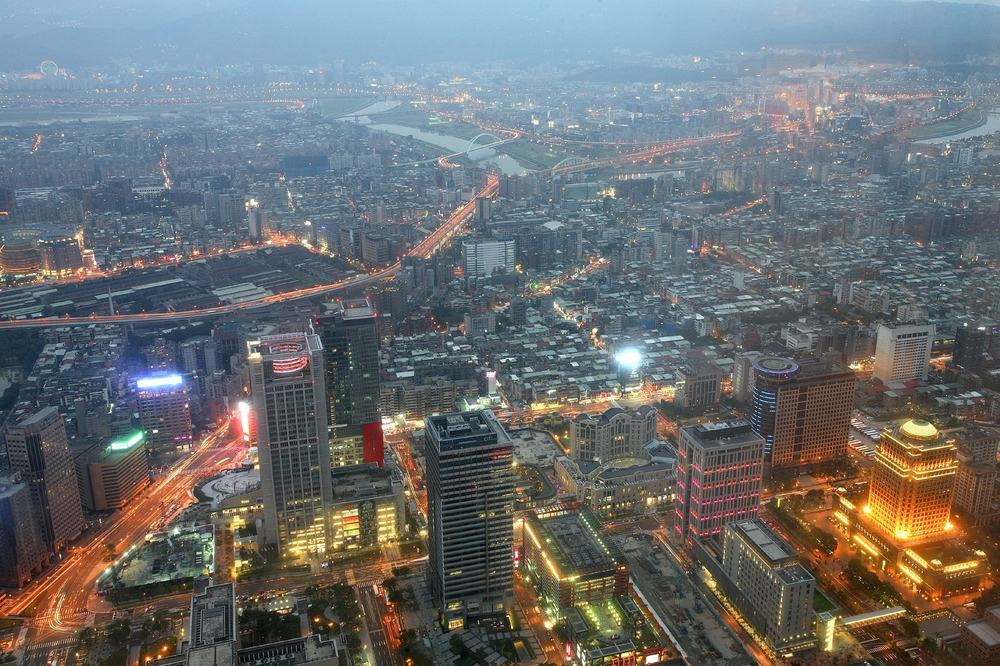
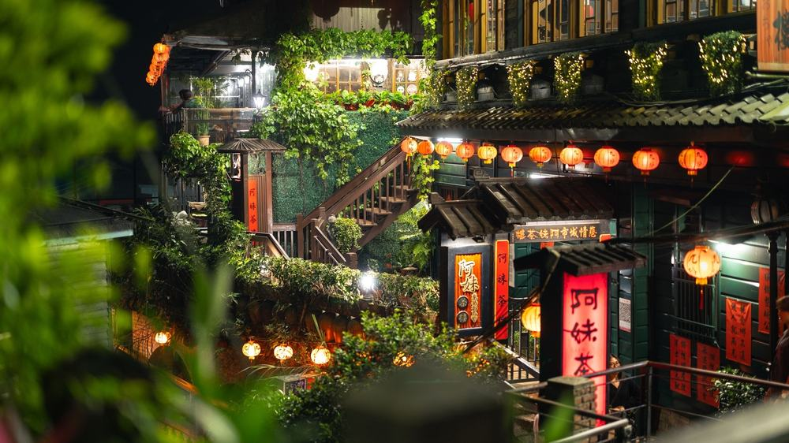

가이드·기사 경비와 3일차 밤 발 마사지 30분이 상품가 안에 이미 들어 있어서 현지에서 봉투를 따로 챙길 일이 거의 없는 타이베이 3박 4일임.
다녀온 후기가 아니라 참좋은여행 일정표와 포함·불포함 원문을 한 줄씩 따져 본 글임.
결론 — 추천. 진에어 직항 왕복, 시외 특급 호텔 3박, 식사 9번, 101 전망대·고궁박물관·스펀 천등·지우펀 야경에 가이드 경비까지 104만 9천원 안에 있고 쇼핑·선택관광은 0. 다만 호텔이 꼭 시내 한복판이어야 하는 분은 다시 따져 볼 것.

오늘 기준 출발일별 요금 보기
https://naver.me/FKGyLUKJ

| 항목 | 내용 |
|---|---|
| 가격 | 1인 1,049,000원 (성인·소아 같음 · 11월 출발 기준) · 2인 2,098,000원 |
| 여행사 | 참좋은여행 |
| 항공 | 진에어 직항 (LJ171·LJ172) · 갈 때 09:35 출발 약 2시간 55분 / 올 때 12:40 출발 16:00 인천 |
| 숙소 | 시외 특급 호텔 3연박 (알로프트 또는 동급 예정 · 출발 2일 전까지 문자 안내) |
| 일정 | 3박 4일 · 식사 9번 · 쇼핑 0 · 선택관광 0 · 가이드·기사 경비 포함 |
▶ 내 출발일 오늘 기준 요금 확인 (제휴 링크 · 예약 시 수수료를 받으며 가격은 같습니다)
▶ 11월 23일 기준 타이베이 패키지 최저 72만 9,900원부터 — 출발일별 값 한 화면에: 비교 페이지
| 번호 | 내용 | 한 줄 답 |
|---|---|---|
| 1 | 이 값에 들어 있는 것 | 식사 9번·경비 포함 |
| 2 | 현장에서 더 낼 돈 | 마사지 팁 정도 |
| 3 | 일정과 체력 | 3일차 버스·계단 |
| 4 | 자유여행으로 짜면 | 항공값 조회 실패 |
| 5 | 맞는 분 · 안 맞는 분 | 3 대 3 |
직항 왕복과 특급 호텔 세 밤, 식사 9번에 101 전망대와 가이드 경비까지 한 값으로 묶임.
- 항공: 진에어 인천 2터미널–타오위안 직항 왕복, 유류할증료·제세공과금 포함 (기내식은 없음)
- 숙소: 시외 특급 호텔 3연박, 2인 1실 · 트윈이나 더블은 랜덤 배정
- 식사: 9번 — 딤섬, 우육면, 대만식 샤브샤브, 현지식, 호텔 조식 3번
- 관광: 국립고궁박물관, 자우궁, 라오허제 야시장, 101빌딩 89층 전망대, 단수이, 중정기념당, 화산1914, 시먼딩, 예류, 스펀, 지우펀 야경
- 덤: 스펀 천등 4인 1개, 망고빙수 2인 1개, 버블티 1인 1잔, 3일차 발 마사지 30분

원문 키포인트엔 101 전망대가 옵션가 US$35 상당, 시먼딩 자유시간이 US$20 상당으로 적혀 있음. 기사·가이드 경비도 「노팁 US$40 상당」 으로 포함임. 값이 비슷한 상품들 사이에서 이 정도면 꽤 꽉 찬 편이라고 봄.
꼭 내야 하는 돈은 없고 마사지 팁과 마지막 날 점심 정도가 남음.
| 항목 | 금액 | 필수/선택 | 비고 |
|---|---|---|---|
| 가이드·기사 경비 | 0원 | — | 상품가에 포함 |
| 선택관광 | 0원 | — | 없음 |
| 발 마사지 팁 | 직접 | 선택 | 원문에 금액 없음 · 마사지 자체는 포함 |
| 4일차 점심 | 직접 | 선택 | 공항에서 해결 |
| 합계 (2인 필수분) | 0원 | 상품가 2인 2,098,000원 별도 |
- 혼자 쓰면 싱글룸 24만원이 붙음
- 유류할증료가 오르내리면 그만큼 값이 바뀔 수 있다고 원문에 적혀 있음
버스가 가장 긴 날은 예류에서 스펀, 지우펀까지 도는 3일차이고 걷기도 이날 제일 많음.
| 일차 | 가는 곳 | 버스 | 걷기 | 점심 · 저녁 |
|---|---|---|---|---|
| DAY 1 | 인천 09:35 → 타오위안 11:30 → 고궁박물관 → 자우궁·라오허제 → 101 전망대 | 약 2시간 | 보통 | 현지식 · 현지식 |
| DAY 2 | 단수이(홍마오청·진리대학·옛거리) → 중정기념당 → 화산1914 → 시먼딩 | 약 2시간 | 보통 | 현지식 · 현지식 |
| DAY 3 | 예류 → 스펀 천등 → 지우펀 야경 → 발 마사지 | 약 3시간 | 중상 | 현지식 · 현지식 |
| DAY 4 | 호텔 조식 → 타오위안 12:40 → 인천 16:00 | 약 1시간 | 적음 | 없음 · 없음 |
- 지우펀은 계단 골목이 이어지고 비가 잦아 바닥 편한 신발이 필요함
- 주말·연휴엔 지우펀 차량 통제로 시내버스(약 20분 이내)로 갈아탈 수 있음
- 고궁박물관 전시실은 쌀쌀해서 얇은 겉옷이 있으면 편함

계단을 오르내린 3일차 밤에 발 마사지가 붙어 있는 게 이 일정의 묘수임. 이 상품 게시판 후기에서도 마사지로 피로가 풀렸다는 말이 여러 번 나옴.
항공값을 오늘 조회하지 못해 합계는 안 냈고 직접 짤 때 따로 챙길 칸만 적음.
| 항목 | 금액 | 근거 |
|---|---|---|
| 인천–타이베이 직항 왕복 | 확인 못 함 | 2026-11-23 마이리얼트립 조회 실패 — 숫자를 지어내지 않음 |
| 호텔 3박 | 확인 못 함 | 날짜·호텔마다 다름 |
| 식사 | 따로 | 패키지는 9번 포함 |
| 공항 이동 | 따로 | 패키지는 버스 포함 |
| 101 전망대·천등·마사지 | 따로 | 패키지는 포함 |
| 여행자보험 | 따로 | 패키지는 최고 1억원 포함 |
| 가이드 | — | 자유여행은 없음 |
- 예류·스펀·지우펀은 북쪽 바닷가와 산길에 흩어져 있어 하루에 잇기가 번거로움
- 직접 가면 택시나 투어를 따로 구해야 하고 그 돈이 이 칸들에 더해짐
걸리는 건 시외 호텔·기내식·계단이고 누구에게만 문제인지 분명함.
| 맞는 분 | 안 맞는 분 |
|---|---|
| 현지에서 경비·옵션 셈을 하기 싫은 분 | 호텔이 꼭 시내 한복판이어야 하는 분 |
| 지우펀을 홍등 켜진 밤에 걷고 싶은 분 | 기내식이 꼭 있어야 하는 분 |
| 101·고궁박물관·천등을 한 번에 넣고 싶은 분 | 돌계단 골목이 많이 버거운 분 |
이 상품 게시판 후기엔 가이드가 대만 역사와 생활을 풀어 줘서 오래 남았다는 말이 나옴. 단체 식사 향신료가 입에 덜 맞았다는 글도 있어서 샤브샤브는 면과 채소 위주로 즐기고 야시장 간식으로 채우는 쪽을 권함.
Q. 타이베이 패키지에 쇼핑이 있나요?
A. 없음. 쇼핑센터는 한 번도 안 들름. 선택관광도 없음.
Q. 가이드 경비는 따로 내나요?
A. 안 냄. 기사·가이드 경비가 상품가에 포함임. 발 마사지 팁만 따로임.
Q. 이 상품은 얼마인가요?
A. 11월 출발 기준 1인 104만 9천원, 2인 209만 8천원. 출발일마다 값이 달라서 날짜별로 확인해야 함.
현지에서 지갑 열 일을 거의 다 상품가 안으로 넣어 둔 게 이 값의 이유임.
부모님 모시고 처음 대만 가는 분께 특히 잘 맞음.
출발일에 따라 값이 달라서 가시려는 날짜 요금부터 확인하시면 됨.
오늘 기준 출발일별 요금 보기
https://naver.me/FKGyLUKJ
이 글에는 네이버 제휴 링크가 포함되어 있으며, 링크를 통해 예약하시면 일정 수수료를 받습니다. 가격은 동일합니다. 가격과 구성은 2026년 11월 23일 확인 기준이며 출발일에 따라 달라질 수 있습니다.
▶ 이 상품, 영상으로 보기 (유튜브)
▶ 타이베이 패키지 오늘 값 나란히 비교
▶ 같은 목적지 다른 여행사 패키지, 쇼핑·선택관광·가이드 경비까지 비교: pkg-lab.com

_-_IMG_07.jpg){kind=link}